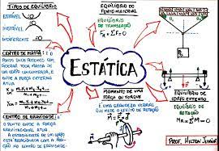
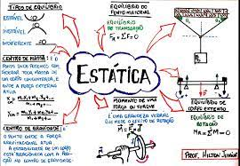

A Estática é a parte da mecânica que estuda os corpos que não se movem ou se movimentam em aceleração constante. Ela estuda as condições nas quais as forças atuantes sobre um corpo se equilibram. De acordo com a Segunda Lei de Newton, quando todas as forças de um sistema se equilibram, sua aceleração é nula. Desse modo, a ausência de movimento dos corpos gera uma aceleração nula, pois quando há equilíbrio a soma vetorial das forças é nula.
A Estática estuda as condições dos corpos extensos bem como dos pontos materiais. A diferença entre eles está nas dimensões, de modo que um corpo extenso é aquele possui tamanho que influencia no estudo, enquanto o ponto material possui tamanho que pode ser desprezado no estudo. Quando um corpo encontra-se em repouso o seu equilíbrio pode ser classificado como estático, já quando o corpo está em movimento retilíneo uniforme, seu equilíbrio é dinâmico.
Assim, para que um corpo esteja em equilíbrio é necessário que o resultado de todas as forças aplicadas sobre ele seja igual a zero. Os tipos de equilíbrio existentes são: equilíbrio estável, equilíbrio instável e equilíbrio indiferente.
Quando o equilíbrio é estável, à medida em que o corpo realiza um pequeno deslocamento em relação à sua posição de equilíbrio, ele retorna à posição inicial, quando abandonado. No equilíbrio instável, ao retirar o corpo da sua posição de equilíbrio, a tendência é que ele se afaste ainda mais dessa posição quando abandonado.
Quando ocorre o equilíbrio indiferente, mesmo ao ser deslocado, o corpo permanece em equilíbrio em uma nova posição, independente do que ocorra. Para compreender o equilíbrio dos corpos é necessário entender alguns conceitos fundamentais da física que são aplicados à Estática como centro de massa, momento de força, equilíbrio do ponto material, equilíbrio dos corpos rígidos.
Conceitos fundamentais para Estática
Existem algumas fórmulas matemáticas e conceitos básicos que são necessários para compreender os estudos da Estática. Esses são fundamentais para explicar porque duas forças atuando sobre a mesma partícula podem ser substituídas pela força resultante.
 
